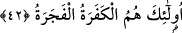

40. Yine o gün birtakım yüzleri toz kaplamış
41. Ve karanlıklar bürümüştür.
“Yine o gün bir takım yüzleri toz” duman gibi karanlık ve siyahlık “kaplamış”
üzerine çökmüş ve “bürümüştür.” Herhangi bir yüzde tozla siyahlığın birleşmesinden
daha korkunç bir şey olamaz. Tıpkı zencinin yüzünün tozlanması gibi.
Râğıb Isfahânî, “karanlıklar” şeklinde tercüme ettiğimiz “kateratun” kelimesini
kızartma veya yakılan odun gibi bir nesneden yükselen duman şeklinde tefsir etmiştir. Şu
halde katera tıpkı ğabera yâni duman tıpkı toz gibidir. Şu halde toz da duman gibidir ve
yalan söyledikleri için yüzleri kaplar.
Seriyy (k.s.) der ki: O gün birtakım yüzler vardır ki onların üzerinde bu’d hüznü
görülmektedir. Çünkü onlar, ilahi kapıdan kovulmuş ve mahrum olmuşlardır.
Sehl (k.s.) ise bu âyeti yine “o gün birtakım yüzleri, Allah’ın onlardan yüz çevirmesi
ve gazabı kaplamıştır” şeklinde anlar. Şu halde bu yüzler zaman geçtikçe daha da
kararır ve toz içinde kalır.
42. İşte bunlar kâfirlerdir ve günahkarlardır.
Yüzlerinin karalı ve tozlu olacağı bildirilen bu kimseler, inkârla günah işlemeyi
birlikte yapmış kimselerdir. Bundan dolayı Allah Teâlâ onların yüzlerinin karalığına bir
de tozu eklemiştir. Nitekim bir hadis-i şerifte şöyle denir: “Hayvanlar kıyamet günü
toprağa dönüştüklerinde bu toprak kâfirlerin yüzlerine serpilir.” [26]
Aynu’l-maânî’de bu âyet şöyle tefsir olunmaktadır: Onlar, Allah’ın hakları açısından
kâfir, kulların hakları açısından fecera/günahkarlardır.
Bu âyet-i kerimede inkâra bitişik olmayan fücûrun/günahın kınanma, hakir olma ve
ilahi yardımdan mahrum kalma açısından inkâra bitişik olanla aynı derecede olmadığına
işâret olunuyor. Çünkü fücûrun aslı ve temeli yalandır, haktan sapmaktır. Fücûr büyük
günah işleme anlamında da kullanılır. Allah’a âsî olan bir mümin de çoğu zaman büyük
günah işleyebilir.Ancak bunu işleyen müminin o günahtan korkması ve kaçınması
gerekir. Çünkü büyük günahlar insanı küfre götürürler. Tıpkı küçük günahların insanı
büyük günah işlemeye götürdüğü gibi.
Din büyüklerinden birisi demiştir ki: Bu altın, gümüş ve çeşitli mallar dünyanın
kendisi değildir. Bunlar dünyanın zarfları ve kaplarıdır. Bunun gibi kulun hareket,
sükûnet ve ibâdetleri de dinin kendisi değildir. Bunlar da dinin kalıpları ve kaplarıdır.
Din bütünüyle dertle yanmak; dünya tamamıyla hasret, pişmanlık ve soğuk rüzgârdır.
Karûn sâhip olduğu altın, gümüş ve diğer bütün malları konusunda rahatsız olmadı.
Diğer taraftan ondan Hak Teâlâ’nın hukuku olan zekât ve sadaka istediler, bundan imtinâ
etti ve Hakk’ın hukukunu gözetmedi. Üstelik onun gönlünü mekruh olan altın, gümüş ve